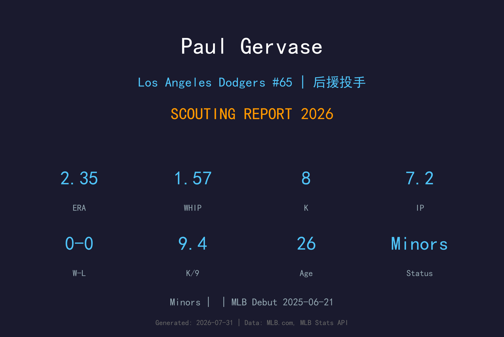
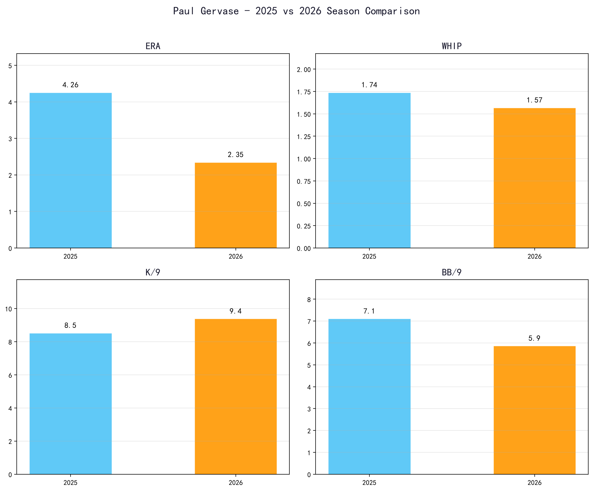
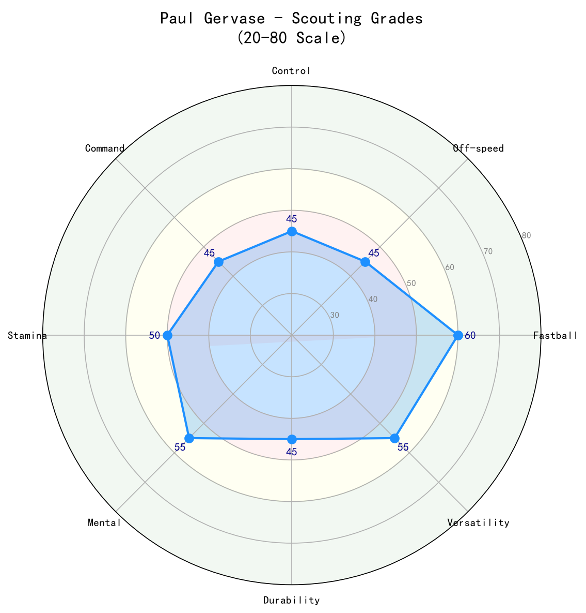

Los Angeles Dodgers #38 | 投手 | Minors

Paul Gervase 是道奇牛棚中一名极具视觉压迫感的右投后援。6 尺 10 寸的身高与 230 磅的体重让他在投手丘上鹤立鸡群，出手点极高，让打者产生极大的视角不适。他的快速球约在 94-97 mph，搭配滑球与变速球，具备成为高杠杆后援的 原始天赋。2025 年在光芒队完成大联盟首秀，但表现起伏（6.1 局 4.26 ERA，被击出 3 支本垒打）。2026 年加盟道奇后，4 场出赛 7.2 局 2.35 ERA，虽然保送率仍然偏高，但本垒打控制明显改善。目前他被下放至 AAA Oklahoma City，仍是道奇牛棚深度的潜在选项。
Paul Gervase 在大学时期展现出成为大联盟投手的潜力，积累了扎实的基础与比赛经验。
Paul Gervase 在 2022 年 MLB 选秀第 12 轮被选中，开启职业棒球生涯。
Paul Gervase 于 2025-06-21 (光芒队) 登上大联盟，开始在高水平舞台展现自己的实力。
Paul Gervase 目前位于道奇小联盟体系，是球队长期深度规划的一部分。

📈 上图为近三年核心数据趋势。柱状图高度代表该年度表现，便于快速比较球员状态的上升或下滑。
| 赛季 | 球队 | G | W-L | SV | HLD | ERA | IP | K | BB | WHIP | K/9 | BB/9 | HR/9 |
|---|---|---|---|---|---|---|---|---|---|---|---|---|---|
| 2025 | TBR | 5 | 0-0 | 0 | 0 | 4.26 | 6.1 | 6 | 5 | 1.74 | 8.53 | 7.11 | 4.26 |
| 2026 | LAD | 4 | 0-0 | 0 | 0 | 2.35 | 7.2 | 8 | 5 | 1.57 | 9.39 | 5.87 | 0.00 |
| 统计项目 | 数值 |
|---|---|
| 出赛 (G) | 9 |
| 先发 (GS) | 0 |
| 胜场 (W) | 0 |
| 败场 (L) | 0 |
| 救援成功 (SV) | 0 |
| 中继成功 (HLD) | 0 |
| 自责分率 (ERA) | 3.21 |
| 投球局数 (IP) | 14.0 |
| 被安打 (H) | 13 |
| 全垒打 (HR) | 3 |
| 三振 (K) | 14 |
| 保送 (BB) | 10 |
| WHIP | 1.64 |
| K/9 | 9.00 |
| BB/9 | 6.43 |
| K/BB | 1.40 |
| HR/9 | 1.93 |
注：两季合计样本仅 14.0 局。2026 年 ERA 与本垒打控制明显优于 2025 年，但保送率仍是主要问题。
Gervase 的王牌球种。6 尺 10 寸的身高让他的出手点接近打者头顶，快速球从极高角度下坠，即使球速不是 elite，也能制造大量挥空与软弱击球。他的快速球上飘（纵向位移）优于平均，是三振的主要来源。
对右打者的主要出局武器。滑球横移明显，与快速球形成约 12 mph 速差与垂直/水平位移差异。当滑球落在后脚边缘时，右打者极难处理。2026 年他的滑球使用率与指挥官均有提升。
对左打者的配球。变速球速差相较于快速球不算大，但下坠幅度足够，偶尔能让左打者击出滚地球。Gervase 仍在开发这颗球的稳定性，以提升对左打者的压制力。
偶尔使用的配球，利用极端身高与手臂角度制造下沉。虽然不是主要武器，但能在需要滚地球时派上用场。
Gervase 的投球机制最为人津津乐道的是他 6 尺 10 寸的身材所带来的出手角度。他采用高四分之三（high-three-quarters）动作，出手点极高，球的入射角非常陡峭。这种机制让他即使球速未达 elite，也能制造 MLB 级别的球质。不过，高大的身材也带来协调挑战：他的动作节奏需要保持稳定，否则容易出现控球失常或连续保送。

| 项目 | 评分 (20-80 量表) | 等级 |
|---|---|---|
| 四缝线 (Fastball) | 60 | B+ |
| 滑球 (Slider) | 55 | B |
| 变速球 (Changeup) | 45 | C+ |
| 伸卡球 (Sinker) | 50 | B- |
| 控球 (控球) | 40 | C |
| 指挥 (控球精准度) | 45 | C+ |
| 心理素质 (Mental) | 50 | B- |
| 耐力/健康 (Durability) | 55 | B |
| 三振能力 (Strikeout Ability) | 55 | B |
Paul Gervase 拥有道奇牛棚中罕见的极端身材优势与三振潜力，但控球不稳与样本不足让他仍处在 发展阶段。若能将 BB/9 压低至 4.0 以下，他有机会成为 Roberts 教练在 7-8 局信赖的后援。
B- 级 / 具有独特身材的潜力后援
Paul Gervase 出生于新泽西州 Middletown，高中时期因高挑身材受到关注。他进入 Rutgers University 后担任先发投手，逐渐提升自己的控球与球速。2022 年 MLB 选秀中，他在第 12 轮被坦帕湾光芒队选中，开启职业棒球生涯。
Gervase 以冷静、低调著称。他的 6 尺 10 寸身材让他在场上天然具有存在感，但他并不依赖气势，而是专注于每一球的执行。他的身高让他在休赛期需要特别注意体能与柔韧性训练，以维持长期健康。